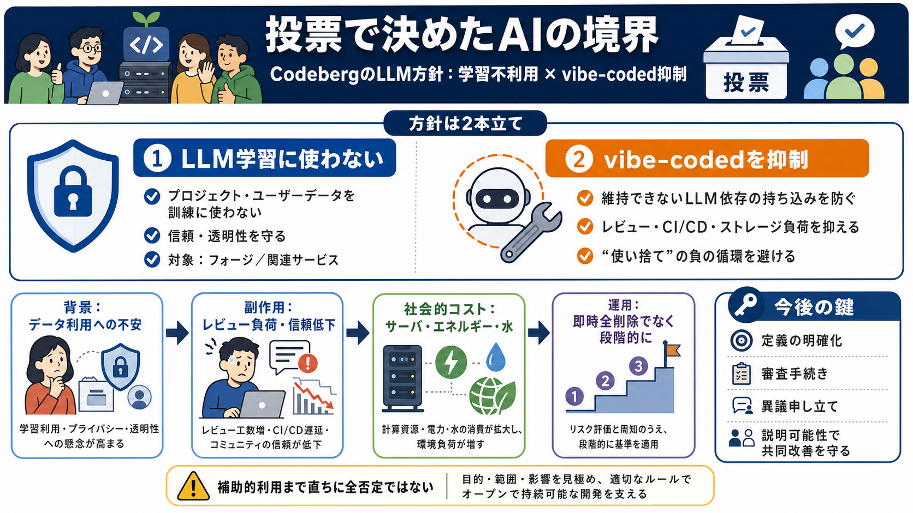

Codeberg Review: Private Code Hosting in 2026 - PrivacyTools.io
### Pages Codeberg logo # Codeberg Codeberg is a free, nonprofit Git hosting service for open-source projects, operat…

非営利のオープンソース共同体 Codeberg が、会員投票で「学習目的の不利用」と「vibe-coded抑制」を方針化しました。
LLMは大量の文章やコードが学習材料になり、リポジトリやユーザーデータが“入力”として使われるのではという不安が広がっています。
可決された提案は、(i) LLM学習への利用を避ける約束の明文化 と、(ii) “気分だけで作る” LLM依存の持ち込みを抑える方向性です。
Codeberg はプライバシーポリシーの考えに沿って、プロジェクトやユーザーデータを LLM の学習・生成ツールの訓練に使わないと明言します。
記事の読み取りでは「LLMを積極的に作る側／vibe-codedとして持ち込むあり方」を問題視しており、補助的利用が直ちに全否定とまでは断定されません。
vibe-codedは、LLMを強く前提にしつつ、少人数・少コミュニティでも資源を消費し、継続的メンテが伴わないタイプを抑え込む意図です。
背景として、LLM関連コスト上昇によるインフラ負担、企業クローラの“無意味なクロール”によるサーバ負荷、開発の形が崩れる問題が挙げられています。
データセンターのエネルギー消費、水、空気汚染や騒音といった“公共インフラ”への影響も広く列挙されています。
短期的に“全削除”のような強制措置ではなく、具体例をもとにルールを運用する方針です。
記事中の早期目安として、次のような方向性は歓迎されにくいとされています（a〜fは要約）。
感情的な排除ではなく、非営利運用の持続性・環境負荷・協働の質という現実課題に結びつけて意思決定している点が強みです。
段階的運用の方針は妥当ですが、具体例・審査手続き・異議申し立てなどが明確になるほど、過剰排除のリスクが下がります。
### Pages Codeberg logo # Codeberg Codeberg is a free, nonprofit Git hosting service for open-source projects, operat…
Codeberg e.V. | Formation | September 2018; 7 years ago (2018-09) | | Type | Eingetragener Verein | | Headquarters | Be…
Codeberg is a collaboration platform that provides free Git hosting and services for open source software, content, and …
Logo Logo ## Software development, but free! Codeberg is a non-profit, community-led effort that provides services to …
← Back to Directory Codeberg Logo # Codeberg Codeberg is a non-profit, community-led platform that provides Git hosti…